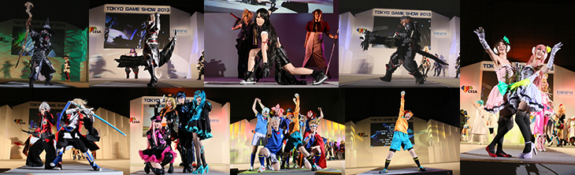

![Business Day 2014.9.18[Thu]-19[Fri] Public Day 2014.9.20[Sat]-21[Sun] @ Makuhari Messe](../../en/common/images/pc_date.png)


A cosplay event is planned for Public Days
TOKYO GAME SHOW 2014 will feature Cosplay Areas in the part of Hall 9 and as well as outside the venue on south side (bay side) of Hall 4 through 6 .
And on September 20th (Sat), Cosplay Collection Night @TGS presented by Cure will be held starting at 18:30 in Hall 8 (Event Stage). We hope all cosplayers will be sure to attend.

Cure, Japan's largest cosplay community website, presents a "Moving Cosplay" stage show. Enjoy 90 minutes of new cosplay excitement with a cosplay fashion show and performances presented by the top cosplayers from Japan and overseas. You'll see cosplay of characters you love and some very rare characters too. Catch the fever at this new sensational show!
| Date | September 20th (Sat) 18:30-20:00 |
|---|---|
| Venue | Event Stage, Hall 8, Makuhari Messe |
| Performers | KOTORI、USAKO、NaGi、KONOMI AKIRA、MARIKO、AZA MIYUKO（Korea）、Valxonia（Thailand）、Chelses Yuan（Malaysia）、Code Lucy（Vietnam）、Yukitora Keiji（Indonesia）、Li An Ran（China）、Nanako（Laos）、Team Fruit Ponchi（HongKong）, and around 200 other cosplay performers Producer: Tatsumi Kan (Cure) MC: Yunmao Ayakawa DJ & MC: WAN (Cosplay Heaven/Ota-Rhythm/Happyakumankikan) VJ: Toshiki Fukazawa (RawLight/HighLIKE) |
| Sponsor | Cure [http://curecos.com/ ] ] |

2002-2014 CESA / Nikkei Business Publications, Inc. All rights reserved.